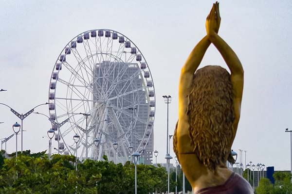

Actualidad
Barranquilla impulsa la innovación tecnológica en la región Caribe
Barranquilla se ha convertido en un punto clave para el desarrollo tecnológico en la región Caribe. En los últimos años, la ciudad ha promovido iniciativas enfocadas en innovación digital, emprendimiento y formación en habilidades tecnológicas.
Además, el crecimiento de empresas locales y la llegada de nuevas inversiones han fortalecido la economía digital. Estos avances permiten generar empleo y posicionar a Barranquilla como una ciudad competitiva a nivel nacional.
Cultura y eventos fortalecen el turismo en Barranquilla

La riqueza cultural de Barranquilla continúa siendo uno de sus principales atractivos. Eventos y festivales han permitido destacar la identidad de la ciudad, atrayendo turistas nacionales e internacionales.
El impulso a la cultura también beneficia a artistas locales, quienes encuentran nuevos espacios para mostrar su talento. Esto contribuye al crecimiento económico y cultural de la región.
